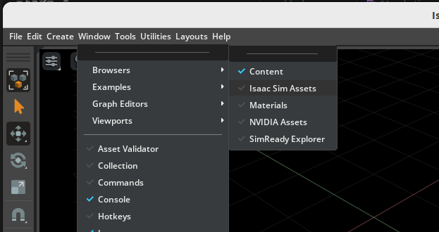

Hello Robot¶
Learning Objectives¶
After completing this tutorial, you will have learned:
- How to load robot assets from a Nucleus Server into a simulation scene
- How to wrap robot primitives with the
Robotclass for high-level API access - How to control articulation joints through velocity commands to move a robot
- How to use physics callbacks to continuously apply actions during simulation
- How to use the
WheeledRobotclass for simplified wheeled robot control
Getting Started¶
Prerequisites¶
- Complete Tutorial 1: Hello World before starting this tutorial.
- A configured Omniverse Nucleus server with the
/Isaacfolder is required.
Estimated Time¶
Approximately 10-15 minutes.
Preparing the Source Code¶
This tutorial continues editing the hello_world.py file from the Hello World sample. If you are continuing from the previous tutorial, you can proceed as-is. If you are resuming on a different day, follow these steps to open the source code:
- Activate Windows > Examples > Robotics Examples to open the Robotics Examples tab.
- Click Robotics Examples > General > Hello World.
- Click the Open Source Code button to open
hello_world.pyin Visual Studio Code.
For detailed instructions, refer to the "Opening the Hello World Sample" section in Hello World.
Adding a Robot to the Scene¶
In the previous tutorial, we added a cube to the scene. This time, we will add a robot. We will use NVIDIA's Jetbot, a two-wheeled differential drive robot.
Adding a robot via GUI (click to expand)
You can also add a robot to the scene by dragging and dropping from the Isaac Sim Assets browser, without writing any Python code.
-
Click Window > Browsers > Isaac Sim Assets to enable the Isaac Sim Assets window.
First launch note
When opening the Isaac Sim Assets window for the first time, asset data will be downloaded, which may take a significant amount of time. Depending on your network environment, this could take several minutes or more.
-
Type "Jetbot" in the search bar and drag and drop the Jetbot asset into the viewport.

This method is convenient for quickly placing robots, but learning the Python API approach allows you to dynamically add and control robots programmatically. The following sections explain the Python API approach.
Adding a Robot via Python API¶
Robot assets are stored on the Omniverse Nucleus server. We use get_assets_root_path() to get the root path of assets, and add_reference_to_stage() to load the asset into the USD Stage.
However, add_reference_to_stage() alone only places the robot's 3D model and physics properties on the Stage. It does not provide robot-level control such as querying joint positions or sending velocity commands. To do that, you would need to directly manipulate low-level USD or PhysX APIs.
To enable high-level control, we wrap the loaded robot prim with the Robot class and register it with world.scene.add(). The Robot class only references the existing prim — it does not copy or transform it. It creates a Python object that provides high-level APIs like get_joint_positions() and apply_action() for the same /World/Fancy_Robot prim.
| Operation | Role |
|---|---|
add_reference_to_stage() |
Creates the robot prim on the USD Stage |
Robot(prim_path=...) |
Creates a Python wrapper that references the existing prim and provides high-level APIs |
world.scene.add() |
Registers the wrapper with the Scene, enabling integration with the World lifecycle (reset/step) |
About References
add_reference_to_stage() adds the USD file as a Reference to the Stage. It maintains a link to the original file, so any changes to the asset are automatically reflected. While it is also possible to directly copy USD content into the Stage, the reference approach is standard practice for loading robot assets.
Save the code and verify the simulation:
- Press Ctrl+S to save the code and hot-reload Isaac Sim.
- Reopen the Hello World sample extension window.
- Click File > New From Stage Template > Empty to create a new world, then click LOAD.
- Check the terminal output.
Important Note on Physics Handles¶
Notice that the num_dof (number of degrees of freedom) value differs between setup_scene and setup_post_load.
| Timing | num_dof Value |
Reason |
|---|---|---|
setup_scene (before reset) |
None |
Physics handles not initialized |
setup_post_load (after reset) |
2 |
Physics handles initialized (left and right wheels) |
Warning
Articulation properties (degrees of freedom, joint positions, etc.) cannot be accessed until the first reset is performed. Always query these properties in setup_post_load or later.
Moving the Robot¶
Next, we will send velocity commands to the Jetbot's wheels to make it move.
Robot motion control uses the ArticulationController. It acts as an implicit PD controller, enabling PD gain settings, action application, and control mode switching.
What is an implicit PD controller? (click to expand)
On a real robot, when you specify a "target position" or "target velocity" to a motor, a controller inside the motor driver computes the current (torque) based on the error between the target and current values to move the joint.
The physics engine in Isaac Sim (PhysX) has the same mechanism built in. When you specify target values via joint_positions or joint_velocities, PhysX internally performs PD control (Proportional-Derivative control) and automatically computes the forces needed to track the target.
This PD controller is not explicitly implemented by the user but is implicitly built into the physics engine — hence the term "implicit PD controller." The gains \(K_p\) (proportional) and \(K_d\) (derivative) can be tuned through the ArticulationController.
ArticulationAction accepts the following three parameters:
| Parameter | Description |
|---|---|
joint_positions |
Target position for each joint |
joint_velocities |
Target velocity for each joint |
joint_efforts |
Torque/force applied to each joint |
Each parameter accepts numpy arrays, lists, or None (no command sent for that degree of freedom in this step).
Choosing between the two apply_action methods
As noted in the code comments, the same operation can be performed via self._jetbot.apply_action(...). Here is a comparison:
| Method | Characteristics |
|---|---|
robot.get_articulation_controller().apply_action() |
Provides access to detailed ArticulationController settings such as PD gain tuning and control mode switching |
robot.apply_action() |
More concise. Internally calls the ArticulationController, so behavior is identical |
If you don't need to adjust PD gains, robot.apply_action() is sufficient. The following tutorials will use this more concise form.
Save the code and verify the simulation:
- Press Ctrl+S to save the code and hot-reload Isaac Sim.
- Click File > New From Stage Template > Empty to create a new world, then click LOAD.
- Press the PLAY button and observe the Jetbot moving around randomly.

Since random velocities (in the range 0-5) are applied to the left and right wheels at every step, the Jetbot moves erratically.
Extra Practice¶
Try the following exercises to deepen your understanding of robot control.
Exercise 1: Move backwards — Make the Jetbot move in reverse.
Hint (click to expand)
Set the wheel velocities to negative values.
Exercise 2: Turn right — Make the Jetbot turn to the right.
Hint (click to expand)
Set different velocities for the left and right wheels (faster on the left, slower on the right).
Exercise 3: Stop after 5 seconds — Make the Jetbot stop 5 seconds after the simulation starts.
Hint (click to expand)
Accumulate step_size each step to calculate elapsed time, and use a conditional to stop the robot.
Using the WheeledRobot Class¶
So far, we have used the generic Robot class. Isaac Sim also provides specialized classes for specific robot types. For wheeled robots, the WheeledRobot class allows more concise code.
Let's compare the Robot class and WheeledRobot class:
| Feature | Robot Class |
WheeledRobot Class |
|---|---|---|
| Asset loading | Two steps: add_reference_to_stage + Robot() |
Single step with WheeledRobot() (create_robot=True) |
| Wheel joints | Specified by index | Can be specified by joint name |
| Action application | get_articulation_controller().apply_action() |
Direct via apply_wheel_actions() |
Key advantages of using WheeledRobot:
- No need to call
add_reference_to_stageseparately (create_robot=Truehandles asset loading) - Wheel joint names can be explicitly specified via
wheel_dof_names apply_wheel_actions()provides wheel-specific action application
Summary¶
This tutorial covered the following topics:
- Loading robot assets from the Nucleus server and adding them to the scene
- Wrapping robot prims with the Robot class for high-level API access
- Joint control using ArticulationController and ArticulationAction
- Continuously applying actions during simulation using physics callbacks
- Simplified wheeled robot control using the WheeledRobot class
Next Steps¶
Proceed to the next tutorial, "Adding a Controller," to learn how to add controllers to your robot for more advanced motion.
Note
The following tutorials continue to use the Extension Workflow for development. Converting to the Standalone Workflow follows the same approach as learned in Hello World.